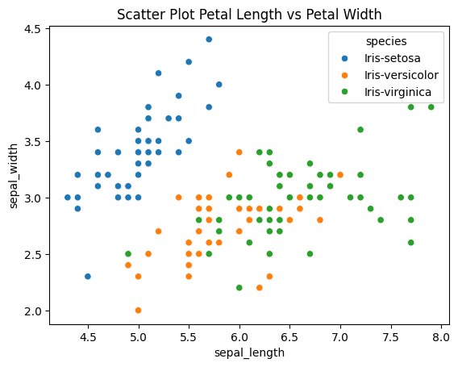
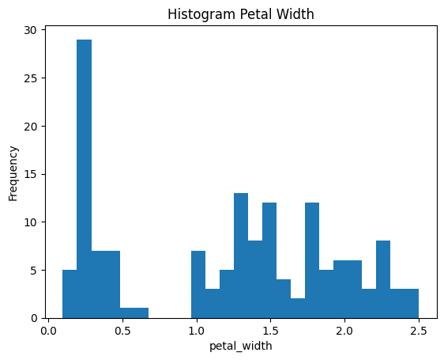

Data Understanding#
Pengertian Data Understanding#
Data Understanding adalah tahap dalam proses Data Mining yang bertujuan untuk memahami karakteristik, struktur, dan kualitas data yang akan digunakan dalam analisis.
Setelah pada tahap sebelumnya kita memahami masalah bisnis, maka pada tahap ini kita mulai memahami:
Data apa yang tersedia dan apakah data tersebut mampu menjawab masalah bisnis?
Tahap ini menjadi jembatan antara kebutuhan bisnis dan proses teknis analisis data.
Tujuan Data Understanding#
Tujuan utama tahap ini adalah:
Mengumpulkan data yang relevan
Mengenali struktur dan tipe data
Menilai kualitas data
Mengidentifikasi pola awal
Menemukan potensi masalah dalam data
Tahap ini membantu memastikan bahwa data benar-benar sesuai dengan tujuan proyek.
Mengapa Data Understanding Penting?#
Tanpa memahami data dengan baik:
Model bisa dibangun dari data yang salah
Analisis menjadi tidak akurat
Kesimpulan bisa menyesatkan
Contoh: Jika ingin memprediksi churn pelanggan tetapi data tidak memiliki informasi riwayat transaksi, maka prediksi menjadi kurang akurat.
Tahapan dalam Data Understanding#
Pengumpulan Data (Data Collection) Data dapat berasal dari berbagai sumber, seperti:
Database internal perusahaan
File CSV atau Excel
API
Data publik
Sistem transaksi
Pada tahap ini, penting untuk memastikan bahwa data yang dikumpulkan relevan dengan tujuan bisnis.
Deskripsi Data (Describing Data) Langkah berikutnya adalah memahami struktur data.
Hal-hal yang diperiksa:
Jumlah baris dan kolom
Nama variabel
Tipe data (numerik, kategorikal, teks, tanggal)
Rentang nilai setiap variabel
Contoh:
Kolom “Umur” bertipe numerik
Kolom “Jenis Kelamin” bertipe kategorikal
Kolom “Tanggal Transaksi” bertipe datetime
Exploratory Data Analysis (EDA) Exploratory Data Analysis (EDA) bertujuan untuk menemukan pola awal dalam data.
Kegiatan yang dilakukan:
Menghitung statistik deskriptif (mean, median, standar deviasi)
Melihat distribusi data (histogram)
Menganalisis hubungan antar variabel (korelasi)
Mengidentifikasi outlier
EDA membantu memahami karakteristik data sebelum masuk ke tahap pembersihan dan pemodelan.
Evaluasi Kualitas Data Data dunia nyata sering memiliki masalah, seperti:
Missing values (nilai kosong)
Duplikasi data
Kesalahan input
Outlier ekstrem
Inkonsistensi format
Pada tahap ini, semua potensi masalah tersebut diidentifikasi untuk diperbaiki pada tahap Data Preparation.
Contoh Sederhana#
Misalkan kita memiliki data pelanggan dengan kolom:
ID Pelanggan
Umur
Pendapatan
Jumlah Transaksi
Status Churn
Pada tahap Data Understanding, kita:
Menghitung rata-rata umur
Melihat distribusi pendapatan
Mengecek apakah ada nilai kosong
Melihat hubungan antara jumlah transaksi dan status churn
Dari sini kita mulai mendapatkan insight awal.
Hubungan dengan Tahap Lain#
Data Understanding berada di antara:
Business Understanding \(\rightarrow\) Data Understanding \(\rightarrow\) Data Preparation
Jika pada tahap ini ditemukan bahwa data tidak lengkap atau tidak relevan, maka kita mungkin perlu:
Mengumpulkan data tambahan
Mengubah tujuan analisis
Kembali ke tahap Business Understanding
Proses ini bersifat iteratif.
Kesalahan Umum dalam Data Understanding#
Tidak melakukan eksplorasi data secara menyeluruh
Langsung masuk ke modelling tanpa EDA
Mengabaikan missing values
Tidak memeriksa distribusi data
Ringkasan#
Aspek |
Penjelasan |
|---|---|
Fokus |
Memahami karakteristik data |
Tujuan |
Menilai kualitas dan relevansi data |
Kegiatan |
EDA, statistik deskriptif, evaluasi kualitas |
Output |
Insight awal & identifikasi masalah data |
Kesimpulan#
Data Understanding adalah tahap penting dalam proses Data Mining yang bertujuan untuk memahami struktur, kualitas, dan pola dalam data. Tahap ini memastikan bahwa data yang digunakan benar-benar sesuai untuk menjawab masalah bisnis dan siap untuk diproses lebih lanjut pada tahap Data Preparation.
Eksplorasi data iris#
Eksplorasi data merupakan tahap awal dalam analisis data yang bertujuan untuk memahami karakteristik dataset sebelum dilakukan pemodelan. Pada dataset Iris, proses eksplorasi dilakukan untuk mengetahui pola, distribusi data, hubungan antar variabel, serta ringkasan statistik dari data bunga iris.
Dataset Iris terdiri dari 150 data bunga dengan 4 atribut numerik:
Sepal Length (panjang kelopak)
Sepal Width (lebar kelopak)
Petal Length (panjang mahkota)
Petal Width (lebar mahkota)
Serta 1 atribut kategorikal:
Species (jenis bunga: Setosa, Versicolor, Virginica)
Eksplorasi data pada penelitian/praktikum ini dilakukan menggunakan dua tools:
Orange \(\rightarrow\) visual & workflow tanpa coding
Google Colab (Python) \(\rightarrow\) analisis berbasis coding
Visualisasi Data#
A. Tujuan Visualisasi#
Visualisasi digunakan untuk:
Melihat distribusi data
Mengidentifikasi pola
Mengetahui pemisahan antar kelas
Mendeteksi outlier
Mempermudah interpretasi data
B. Visualisasi menggunakan Orange#

Pada Orange, visualisasi dilakukan dengan workflow berikut:
File \(\rightarrow\) Data Table \(\rightarrow\) Scatter Plot/Select Columns\(\rightarrow\)Rank/Pivot Table/Correlations/Box Plot/Column Statistics/Distributions
Beberapa visualisasi penting yang di coba:
File
Widget File digunakan untuk memuat atau mengimpor dataset ke dalam Orange dari berbagai format file seperti CSV, Excel, atau TXT.

Data Table
Widget Data Table digunakan untuk menampilkan dataset dalam bentuk tabel, sehingga pengguna dapat melihat isi data secara lengkap.

Scatter Plot
Widget Scatter Plot digunakan untuk menampilkan hubungan antara dua atribut dalam bentuk grafik titik, sehingga dapat melihat pola dan penyebaran data.

Contoh: hubungan antara sepal length dan sepal width, sehingga kita dapat melihat pola penyebaran data dan perbedaan antar kelas bunga Iris.
Select Columns \(\rightarrow\) Rank
Widget Select Columns digunakan untuk memilih atribut yang akan digunakan dan menentukan variabel target. Widget Rank digunakan untuk menilai dan memberi peringkat atribut berdasarkan tingkat kepentingannya terhadap variabel target.
Select Columns

Rank

Widget Select Columns digunakan untuk memilih atribut yang akan digunakan dan menentukan variabel target, sedangkan widget Rank digunakan untuk menilai dan memberi peringkat atribut berdasarkan tingkat kepentingannya terhadap variabel target.
Pivot Table
Widget Pivot Table digunakan untuk merangkum dan menghitung data berdasarkan kategori tertentu dalam bentuk tabel ringkasan.
 Pada tampilan ini, Pivot Table digunakan untuk menghitung jumlah data pada setiap kelas species. Hasilnya menunjukkan bahwa setiap kelas Iris (setosa, versicolor, virginica) memiliki masing-masing 50 data, dengan total 150 data.
Pada tampilan ini, Pivot Table digunakan untuk menghitung jumlah data pada setiap kelas species. Hasilnya menunjukkan bahwa setiap kelas Iris (setosa, versicolor, virginica) memiliki masing-masing 50 data, dengan total 150 data.Correlations
Widget Correlations digunakan untuk menghitung dan menampilkan nilai korelasi antar atribut menggunakan metode Pearson correlation.

Dari hasil terlihat bahwa petal length dan petal width memiliki korelasi sangat kuat sebesar +0.963, artinya kedua atribut memiliki hubungan yang sangat erat. Sedangkan beberapa atribut lain memiliki korelasi sedang hingga lemah, bahkan negatif.
Box Plot Widget Box Plot digunakan untuk menampilkan distribusi data, nilai median, rentang, dan outlier dari suatu atribut dalam bentuk box plot.

Pada tampilan ini, Box Plot digunakan untuk membandingkan distribusi sepal width pada setiap kelas species. Terlihat bahwa setiap kelas memiliki median dan rentang nilai yang berbeda, sehingga membantu memahami perbedaan karakteristik antar kelas Iris.
Column Statistics
Widget Column Statistics digunakan untuk menampilkan statistik deskriptif dari setiap atribut, seperti mean, median, minimum, maksimum, dan distribusi data.

Widget ini membantu untuk memahami karakteristik data secara statistik, misalnya rata-rata sepal length adalah 5.843, serta melihat penyebaran dan rentang nilai setiap atribut pada dataset Iris.
Distributions
Widget Distributions digunakan untuk menampilkan distribusi atau penyebaran nilai suatu atribut dalam bentuk histogram.

Pada tampilan ini, histogram menunjukkan distribusi nilai petal width, sehingga kita dapat melihat frekuensi kemunculan nilai tertentu dan memahami pola penyebaran data.
C. Visualisasi menggunakan Google Colab (Python)#
Pemanggilan Library
Kode di bawah ini berfungsi untuk mengimpor file iris yang akan digunakan dalam proses analisis dan visualisasi data pada Google Colab.
import pandas as pd
import matplotlib.pyplot as plt
import seaborn as sns
---------------------------------------------------------------------------
ModuleNotFoundError Traceback (most recent call last)
Cell In[1], line 1
----> 1 import pandas as pd
2 import matplotlib.pyplot as plt
3 import seaborn as sns
ModuleNotFoundError: No module named 'pandas'
Penjelasan Kode:
Pandas (pd) digunakan untuk membaca dan mengolah data.
Matplotlib (plt) digunakan untuk membuat grafik.
Seaborn (sns) digunakan untuk membuat visualisasi data yang lebih menarik dan informatif.
Membaca Dataset Iris
Kode di bawah berfungsi untuk memuat file dataset dan menampilkan sebagian data sebagai langkah awal untuk melihat struktur dan isi dataset.
df = pd.read_csv('IRIS.csv')
df.head(10)
| sepal_length | sepal_width | petal_length | petal_width | species | |
|---|---|---|---|---|---|
| 0 | 5.1 | 3.5 | 1.4 | 0.2 | Iris-setosa |
| 1 | 4.9 | 3.0 | 1.4 | 0.2 | Iris-setosa |
| 2 | 4.7 | 3.2 | 1.3 | 0.2 | Iris-setosa |
| 3 | 4.6 | 3.1 | 1.5 | 0.2 | Iris-setosa |
| 4 | 5.0 | 3.6 | 1.4 | 0.2 | Iris-setosa |
| 5 | 5.4 | 3.9 | 1.7 | 0.4 | Iris-setosa |
| 6 | 4.6 | 3.4 | 1.4 | 0.3 | Iris-setosa |
| 7 | 5.0 | 3.4 | 1.5 | 0.2 | Iris-setosa |
| 8 | 4.4 | 2.9 | 1.4 | 0.2 | Iris-setosa |
| 9 | 4.9 | 3.1 | 1.5 | 0.1 | Iris-setosa |
Penjelasan Kode:
pd.read_csv(‘IRIS.csv’) digunakan untuk membaca file CSV bernama IRIS.csv dan menyimpannya ke dalam variabel df.
df.head(10) digunakan untuk menampilkan 10 baris pertama dari dataset sebagai preview data.
Visualisasi Data (Scatter Plot)
Kode di bawah ini Kode untuk menampilkan visualisasi hubungan antara dua variabel dalam bentuk grafik Scatter Plot, sehingga dapat membantu dalam melihat pola dan hubungan antar variabel.
plt.figure()
sns.scatterplot(
x='sepal_length',
y='sepal_width',
hue='species',
data=df
)
plt.title("Scatter Plot Petal Length vs Petal Width")
plt.show()

Penjelasan Kode:
plt.figure() digunakan untuk membuat area atau kanvas grafik baru.
sns.scatterplot() digunakan untuk menampilkan grafik sebar antara variabel sepal_length dan sepal_width.
hue=’species’ digunakan untuk membedakan warna titik berdasarkan jenis bunga.
plt.title() digunakan untuk memberikan judul pada grafik.
plt.show() digunakan untuk menampilkan grafik ke output.
Visualisasi Data (Distributions)
Kode di bawah ini untuk menampilkan visualisasi distribusi suatu variabel dalam bentuk histogram, sehingga dapat membantu dalam memahami pola penyebaran dan frekuensi data.
plt.figure()
plt.hist(df['petal_width'], bins=25)
plt.xlabel("petal_width")
plt.ylabel("Frequency")
plt.title("Histogram Petal Width")
plt.show()

Penjelasan Kode:
plt.figure() digunakan untuk membuat area atau kanvas grafik baru.
plt.hist(df[‘petal_width’], bins=25) digunakan untuk menampilkan histogram distribusi nilai petal_width dengan 25 interval (bins).
plt.xlabel(“petal_width”) digunakan untuk memberikan label pada sumbu X yaitu petal_width.
plt.ylabel(“Frequency”) digunakan untuk memberikan label pada sumbu Y yaitu jumlah atau frekuensi data.
plt.title(“Histogram Petal Width”) digunakan untuk memberikan judul pada grafik histogram.
plt.show() digunakan untuk menampilkan grafik ke output.
Analisa korelasi#
A. Tujuan Analisa Korelasi#
Analisis korelasi digunakan untuk mengetahui:
Seberapa kuat hubungan antar variabel
Atribut mana yang paling berpengaruh
Redundansi fitur
Dasar feature selection
Nilai korelasi berada pada rentang -1 sampai 1:
Mendekati 1 \(\rightarrow\) hubungan positif kuat
Mendekati -1 \(\rightarrow\) hubungan negatif kuat
Mendekati 0 \(\rightarrow\) tidak ada hubungan
B. Korelasi menggunakan Orange#
Workflow: File \(\rightarrow\) Correlations
Hasil dataset Iris Untuk Analisa Korelasi:
Petal Length \(\leftrightarrow\) Petal Width \(\rightarrow\) korelasi sangat tinggi
Sepal Length \(\leftrightarrow\) Petal Length \(\rightarrow\) korelasi tinggi
Sepal Width \(\rightarrow\) korelasi relatif rendah dengan atribut lain
Interpretasi: Petal attributes merupakan fitur paling penting dalam membedakan spesies.
C. Korelasi menggunakan Colab (Python)#
Kode berikut digunakan untuk mengukur tingkat hubungan (korelasi) antara variabel numerik dalam dataset, sehingga dapat diketahui seberapa kuat keterkaitan antar variabel tersebut.
corr_matrix = df.corr(numeric_only=True)
corr_matrix
| sepal_length | sepal_width | petal_length | petal_width | |
|---|---|---|---|---|
| sepal_length | 1.000000 | -0.109369 | 0.871754 | 0.817954 |
| sepal_width | -0.109369 | 1.000000 | -0.420516 | -0.356544 |
| petal_length | 0.871754 | -0.420516 | 1.000000 | 0.962757 |
| petal_width | 0.817954 | -0.356544 | 0.962757 | 1.000000 |
Penjelasan Kode:
df.corr(numeric_only=True) digunakan untuk menghitung nilai korelasi antar kolom numerik.
numeric_only=True digunakan untuk memilih hanya data bertipe angka.
corr_matrix digunakan untuk menyimpan hasil korelasi.
corr_matrix digunakan untuk menampilkan matriks korelasi.
Catatan: Kenapa Nilainya terilhat tidak sama? sebenarnya, nilainya sama, hanya cara tampilnya berbeda.
Penjelasan hal tersebut:
Tabel matriks korelasi Menampilkan semua pasangan variabel dalam bentuk matriks. Contoh:
petal_length vs petal_width = 0.962757
petal_length vs sepal_length = 0.871754
Nilai tampil sampai 6 desimal.
Widget Correlations di Orange Menampilkan pasangan variabel saja (pairwise) dalam bentuk daftar. Biasanya diurutkan dari korelasi terbesar \(\rightarrow\) terkecil. Nilai ditampilkan dalam bentuk pembulatan (3 desimal):
0.962757 \(\rightarrow\) 0.963
0.871754 \(\rightarrow\) 0.872
Jadi bukan beda hasil, tetapi: Metode sama \(\rightarrow\) Pearson correlation
Data sama
Nilai sama
Hanya beda format tampilan & pembulatan
Statistik dikriptif#
A. Tujuan Statistik Deskriptif#
Statistik deskriptif digunakan untuk merangkum data tanpa melakukan inferensi.
Informasi yang diperoleh:
Mean (rata-rata)
Median
Minimum
Maximum
Standar deviasi
Dll.
B. Statistik Deskriptif menggunakan Orange#
Workflow:
File \(\rightarrow\) Column Statistics
Hasil dataset Iris Untuk Statistik Deskriptif:
Informasi yang didapat:
Rata-rata setiap atribut
Nilai Minimal
Nilai Maksimal
Distribusi nilai
Dll.
Contoh interpretasi:
Petal Length Setosa memiliki nilai rata-rata paling kecil
Virginica memiliki rata-rata terbesar
C. Statistik Deskriptif menggunakan Colab (Python)#
Kode berikut digunakan untuk menghitung statistik deskriptif pada dataset IRIS, yang bertujuan untuk memberikan gambaran umum mengenai karakteristik data, seperti jumlah data, rata-rata, nilai minimum, maksimum, kuartil, standar deviasi, variansi, skewness, dan modus.
import pandas as pd
from scipy import stats
df = pd.read_csv("IRIS.csv")
# Ambil hanya kolom numerik (tanpa species)
df_numeric = df.select_dtypes(include=['int64','float64'])
for col in df_numeric.columns:
print("Statistik untuk", col,)
print("Jumlah Data :", df[col].count())
print("Rata-rata :", df[col].mean())
print("Nilai Minimum :", df[col].min())
print("Q1 :", df[col].quantile(0.25))
print("Median (Q2) :", df[col].quantile(0.5))
print("Q3 :", df[col].quantile(0.75))
print("Nilai Maximum :", df[col].max())
print("Kemencengan :", round(df[col].skew(), 6))
mode = stats.mode(df[col], keepdims=True)
print("Modus :", mode.mode[0], "dengan jumlah", mode.count[0])
print("Standar Deviasi :", round(df[col].std(), 6))
print("Variansi :", round(df[col].var(), 6))
print("\n")
Statistik untuk sepal_length
Jumlah Data : 150
Rata-rata : 5.843333333333334
Nilai Minimum : 4.3
Q1 : 5.1
Median (Q2) : 5.8
Q3 : 6.4
Nilai Maximum : 7.9
Kemencengan : 0.314911
Modus : 5.0 dengan jumlah 10
Standar Deviasi : 0.828066
Variansi : 0.685694
Statistik untuk sepal_width
Jumlah Data : 150
Rata-rata : 3.0573333333333337
Nilai Minimum : 2.0
Q1 : 2.8
Median (Q2) : 3.0
Q3 : 3.3
Nilai Maximum : 4.4
Kemencengan : 0.318966
Modus : 3.0 dengan jumlah 26
Standar Deviasi : 0.435866
Variansi : 0.189979
Statistik untuk petal_length
Jumlah Data : 150
Rata-rata : 3.7580000000000005
Nilai Minimum : 1.0
Q1 : 1.6
Median (Q2) : 4.35
Q3 : 5.1
Nilai Maximum : 6.9
Kemencengan : -0.274884
Modus : 1.4 dengan jumlah 13
Standar Deviasi : 1.765298
Variansi : 3.116278
Statistik untuk petal_width
Jumlah Data : 150
Rata-rata : 1.1993333333333336
Nilai Minimum : 0.1
Q1 : 0.3
Median (Q2) : 1.3
Q3 : 1.8
Nilai Maximum : 2.5
Kemencengan : -0.102967
Modus : 0.2 dengan jumlah 29
Standar Deviasi : 0.762238
Variansi : 0.581006
Penjelasan Kode:
import pandas as pd digunakan untuk mengimpor library pandas yang berfungsi mengolah dan membaca data.
from scipy import stats digunakan untuk mengimpor fungsi statistik tambahan seperti perhitungan modus.
df = pd.read_csv(“IRIS.csv”) digunakan untuk membaca file dataset IRIS ke dalam variabel df.
df.select_dtypes(include=[‘int64’,’float64’]) digunakan untuk mengambil hanya kolom bertipe numerik agar kolom kategorikal (species) tidak ikut dihitung.
for col in df_numeric.columns: digunakan untuk melakukan perulangan pada setiap kolom numerik.
df[col].count() digunakan untuk menghitung jumlah data pada kolom tersebut.
df[col].mean() digunakan untuk menghitung nilai rata-rata.
df[col].min() dan df[col].max() digunakan untuk mencari nilai minimum dan maksimum.
df[col].quantile() digunakan untuk menghitung kuartil (Q1, Q2/median, Q3).
df[col].skew() digunakan untuk menghitung kemencengan (skewness) distribusi data.
stats.mode() digunakan untuk menghitung nilai yang paling sering muncul (modus).
df[col].std() digunakan untuk menghitung standar deviasi.
df[col].var() digunakan untuk menghitung variansi data.
Kesimpulan Eksplorasi#
Berdasarkan eksplorasi dataset Iris menggunakan Orange dan Colab:
Eksplorasi data Iris menggunakan Orange dan Google Colab (Python) menunjukkan bahwa dataset memiliki tiga kelas bunga (setosa, versicolor, virginica) dengan empat fitur utama, yaitu sepal length, sepal width, petal length, dan petal width.
Dari sisi visualisasi, seperti scatter plot membantu memperlihatkan pola pemisahan antar kelas, terutama pada petal length dan petal width yang tampak paling membedakan setosa dari dua spesies lainnya.
Sementara itu, analisis korelasi menunjukkan hubungan positif kuat antara petal length dan petal width, sedangkan sepal width memiliki korelasi yang lebih lemah terhadap fitur lain.
Berdasarkan statistik deskriptif, terlihat perbedaan nilai rata-rata dan sebaran setiap fitur pada masing-masing spesies, di mana setosa memiliki ukuran petal paling kecil dan virginica paling besar.
Secara keseluruhan, eksplorasi ini menunjukkan bahwa fitur petal merupakan indikator paling penting dalam membedakan spesies pada dataset Iris.